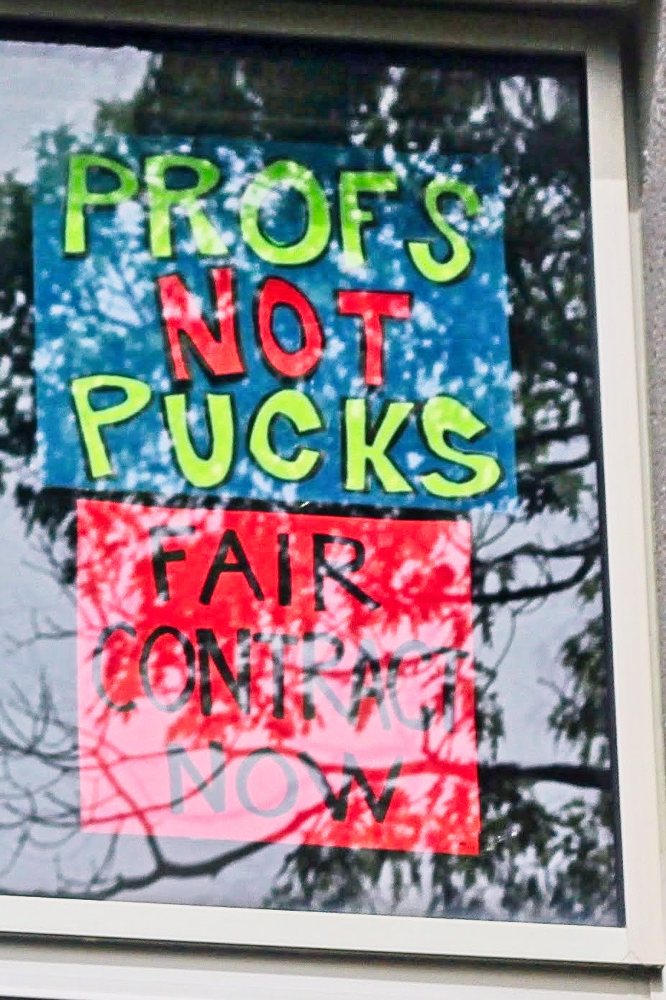

Our New Daily Bulletin!
As we move into our second week of job action, we wanted to be able to share news from the line, events to be aware of, as well as updates from leadership and the bargaining team as they become available. Have an idea for something to cover? Let us know at dfa.daily.bulletin@gmail.com.
August 22nd Rally!
The last time our union held a job action rally was twenty-three years ago, but we haven’t lost our touch! This past Friday over 300 people (members and supporters, including students, representatives from other Dalhousie unions, other local, provincial, and national unions, and community members) gathered outside the Killam Library to make our voices heard! And make them heard we did! As President Dave Westwood said in his recent message, “our bargaining team now has a clear and strong mandate to demand that the Board return to the table to negotiate a contract.”
Picket News and New Schedules!
It looks like rain is coming, which is good news for the province! But keep an eye on the weather and dress appropriately for the lines (there are a limited number of ponchos available).
You should have all received an email over the weekend with a new survey asking for your availability for pickets in September. Make sure to ask colleagues on your line if they received theirs, so we can catch anyone whose survey went to their junk folder, or had other technical glitches. Find someone who didn’t get it? Just forward the email to them! Thank you!
Solidarity and Support
More than two dozen academic and public sector unions from across the entire country have donated to our cause, for a growing total of over $35,000! We’ve also received important support from other unions, including the Nova Scotia Federation of Labour and theNova Scotia Teachers Union, among many others. We’ll keep updating the list available here so you can all see the wealth of support for our cause! We also received organizing and other supports from CAUT and our sibling Dalhousie unions of NSGEU and CUPE 3912, who issued statements and were represented at our rally. Solidarity is how we will all win fair contracts!
Bargaining Update
With our overwhelming rejection of the Board’s entirely underwhelming offer, we have sent the ball back to their court. As of this writing (Sunday night, Aug 24), there has been no update from the Board. In fact, there has been no communication from administration since President Kim Brooks locked us out on Wednesday! Hopefully we hear from their team soon that they are coming back to the table. Until then, maybe we should start a new game show: “Where in the World is President Brooks?!”
Upcoming events
We are planning some great activities and supports for our members. Some of our counsellor colleagues will be setting up in the Solidarity Hub at the Student Union Building: stay tuned for more details, but feel free to stop by the Hub for a snack and a chat! And don’t forget, we’ll be holding rallies every Friday: let’s see if we can break our attendance record from last week! Time and location to follow.
